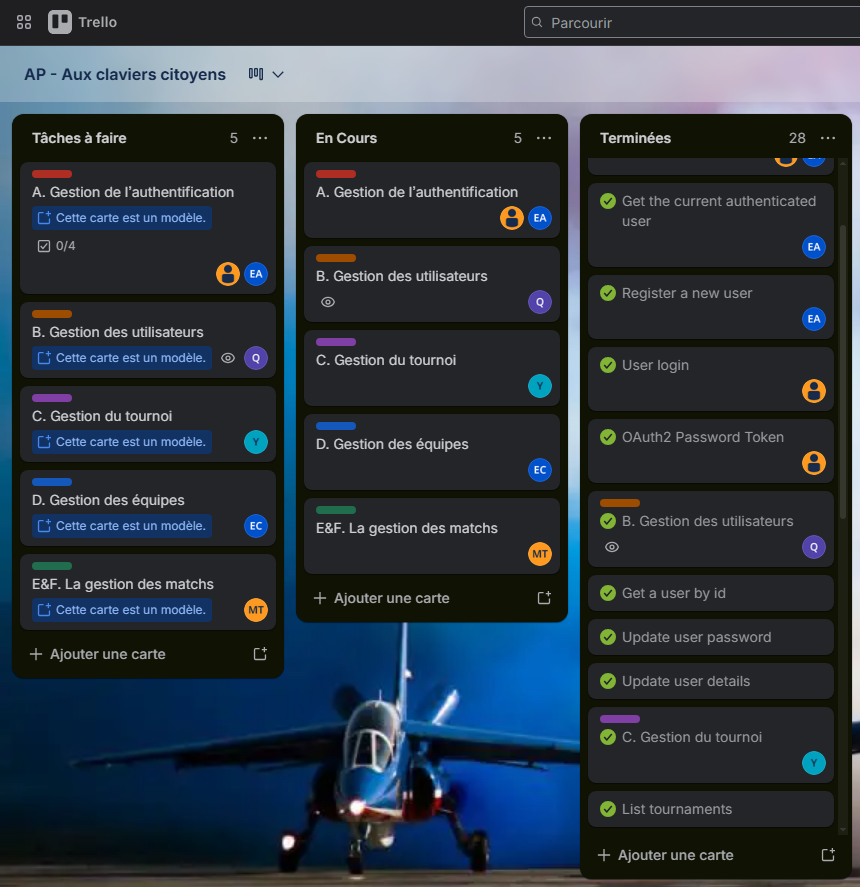
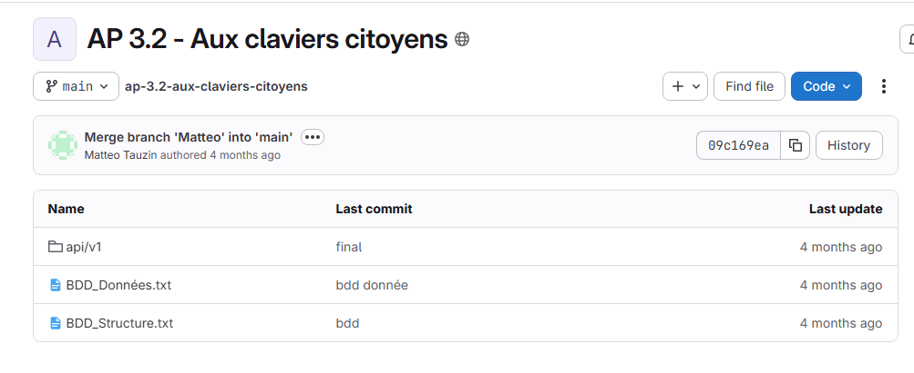
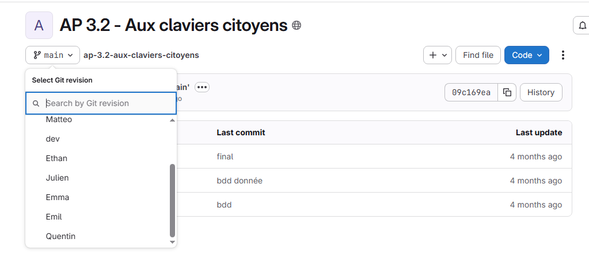
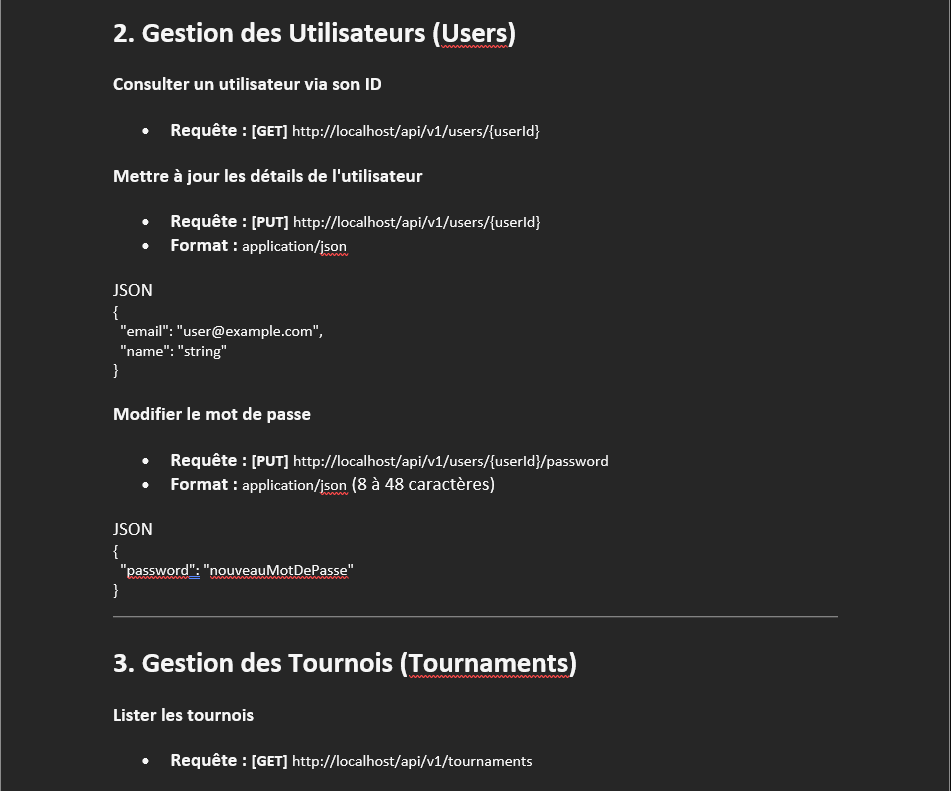

Aux Claviers Citoyens (API REST)
PHP, SQLContexte du Projet
Le projet global consiste en la conception et le développement d'une API RESTful complète et sécurisée pour assurer l'interaction entre une base de données MySQL et le frontend de la nouvelle application "Aux Claviers Citoyens".
Ma Réalisation (Partie B)
J'ai entièrement réalisé la section du cahier des charges dédiée spécifiquement à la gestion des utilisateurs. J'ai créé et sécurisé les routes backend permettant la récupération des informations d'un profil via son identifiant, la mise à jour des données personnelles (email, nom d'affichage), ainsi que la modification sécurisée des mots de passe.
Compétences rattachées et validées
- Gérer le patrimoine informatique
- Gérer les sauvegardes : Pour ce projet de groupe, nous avons choisi d'utiliser la plateforme GitLab afin de centraliser tout notre code source en un seul endroit sécurisé. Travailler à plusieurs sur la même application demande beaucoup d'organisation : pour éviter qu'on écrase par erreur le travail d'un camarade, nous avons mis en place une gestion par branches Git.
- Travailler en mode projet
- Planifier les activités :
Le développement de cette API étant un projet d'équipe, l'organisation et la répartition des tâches se
sont faites de manière agile via l'outil Trello. Cela nous a permis de structurer notre travail
collectif, de la création de la base de données jusqu'au développement des différentes routes, et de
suivre efficacement notre avancement.

- Planifier les activités :
Le développement de cette API étant un projet d'équipe, l'organisation et la répartition des tâches se
sont faites de manière agile via l'outil Trello. Cela nous a permis de structurer notre travail
collectif, de la création de la base de données jusqu'au développement des différentes routes, et de
suivre efficacement notre avancement.
- Mettre à disposition des utilisateurs un service
informatique
- Accompagner les utilisateurs dans la prise en main d'un service : La documentation des requêtes n'étant pas donnée à l'origine, notre équipe a rédigé un guide complet (fichier Documentation Requêtes Postman.docx). Cette documentation a été développée pendant l'AP pour permettre aux développeurs frontend de comprendre le fonctionnement de l'API, les paramètres attendus et les formats de réponse, facilitant ainsi la prise en main du service.


